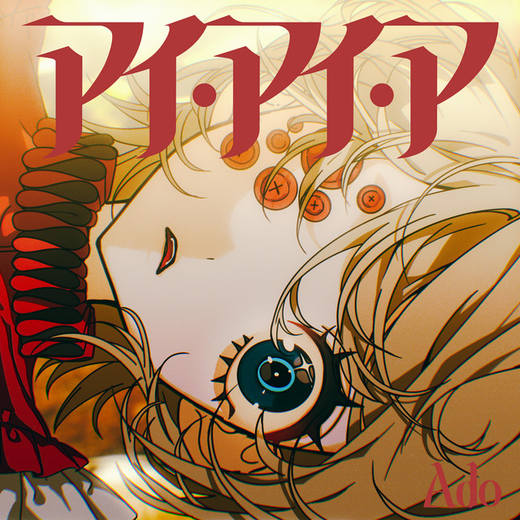
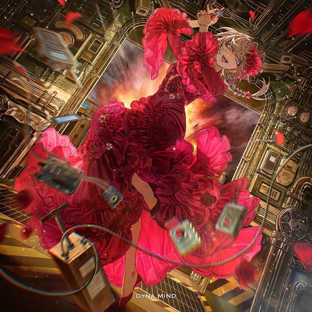
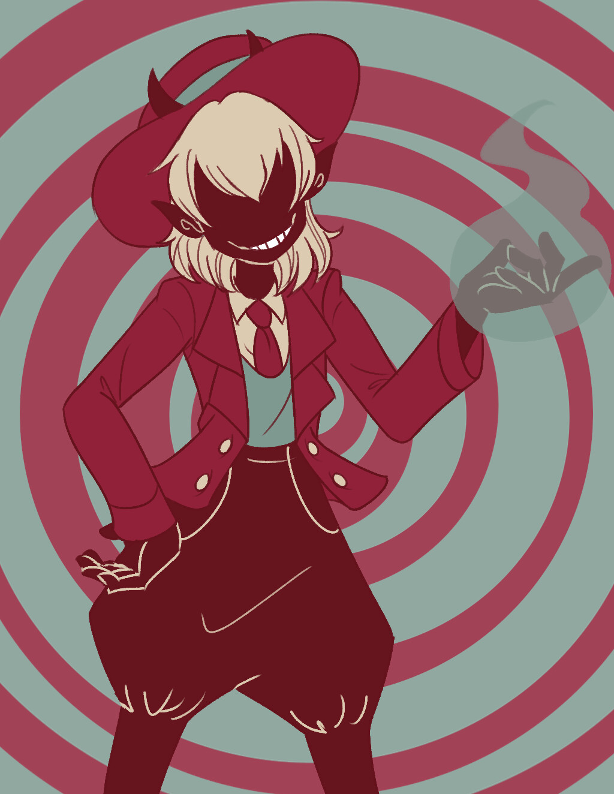
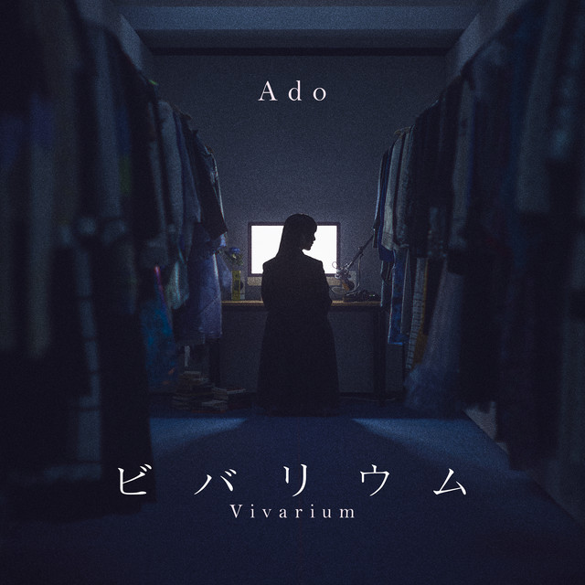
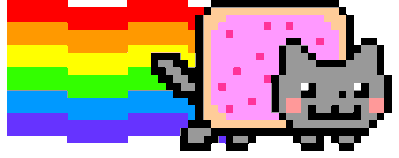

J-Pop frenético (Ado, Eve, MAISONdes), baladas melancólicas, Vocaloid clásico, anime openings con drama, y City Pop acústico suave.
Voz mixta, resonancia de máscara, vibrato sutil, articulación veloz de consonantes japonesas y falsete con textura de aire.
Odo (Ado) · Vivarium · Shinunoga E-Wa (Fujii Kaze) · Dramaturgy (Eve) · Tokyo Shandy Rendezvous.
Micrófono condensador con antipop casero, audífonos viejos pero fieles, cuarto a oscuras a las 2:00 AM y taza de agua tibia con miel.
1. Respiración diafragmática 4-4-8 · 2. Sirenas con 'brrr' · 3. Escalas pentatónicas · 4. Lectura rítmica de kanjis en voz alta.
「技術より感情」 — Antes que la afinación estéril o la técnica robótica, prefiero que se sienta la emoción pura, la rabia y el alma.
Por fin logré mantener el flujo de aire sin apretar la garganta. La colocación nasal salvó el agudo.
[view more ↗]Si actúo la canción como un villano de anime en lugar de pensar en cantar bonito, la voz sale sola.
[view more ↗]Las tomas imperfectas con algo de estática tienen una vibra que ningún plugin puede imitar.
[view more ↗]







Cantar para mí nunca fue una búsqueda de escenarios ni aplausos. Empezó como un refugio nocturno en mi habitación, tarareando pistas en japonés que sentía que expresaban matices y emociones que en mi vida cotidiana resultaba difícil articular.
El idioma japonés tiene una sonoridad rítmica fascinante: las vocales abiertas, la cadencia de las moras y esa urgencia dramática del J-Pop contemporáneo me retaron a estudiar pronunciación, entrenar el oído y, sobre todo, perderle el miedo a que mi voz suene rasgada o vulnerable.
Cada archivo demo grabado a las 3:00 AM es un testimonio de intentos fallidos y pequeños hallazgos. No busco una afinación quirúrgica ni correcciones digitales: prefiero que se escuche el aire, la imperfección y la verdad de cada nota cantada desde el corazón.
“歌は心の声 — La voz es el reflejo honesto de lo que guardamos dentro.”